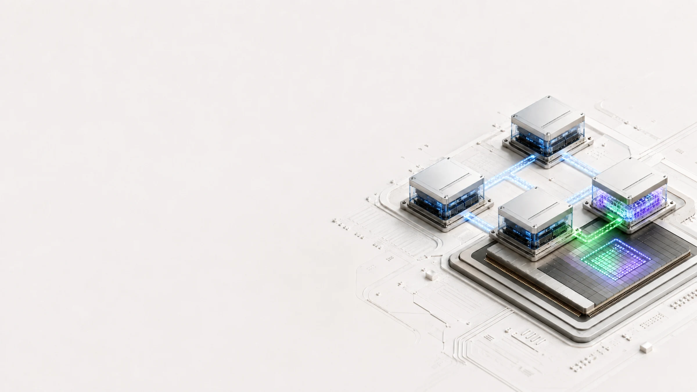

kubeadm
Production-shaped Kubernetes on real VM nodes, with kindnet, storage, metrics, and LoadBalancer support installed on first boot.
kiac create cluster --workers 2

Real Kubernetes nodes. Now with real Apple GPU access.
Build multi-node clusters on Apple silicon where every node is its own lightweight VM. Choose kubeadm, k3s, or Cilium, then add opt-in GPU workers through krunkit, Venus, Vulkan, and Kubernetes DRA.
$ brew install --cask saiyam1814/tap/kiac
kiac.dev/gpu schedulingNew in v0.7.1 · Alpha
Kiac creates dedicated krunkit workers, maps the Apple GPU through virtio-gpu, and exposes a verified Venus/Vulkan device only to workloads that request it.
kiac.dev/gpu, supports the gpu.kiac.dev DRA driver, and never pretends that nvidia.com/gpu capacity exists.$ kiac gpu doctor OK Apple silicon host OK krunkit 1.3.2+ OK vmnet-helper 0.13.0+ OK Venus-capable renderer $ kiac create cluster --name gpu-lab \ --distro k3s --workers 1 --gpu-workers 1 \ --gpu-resource-driver dra Cluster "gpu-lab" is ready. $ kubectl logs kiac-gpu-vulkan deviceName = Virtio-GPU Venus (Apple M1 Max) driverName = venus KIAC_REAL_APPLE_GPU_OK
Unified GPU hardware
Dedicated Linux node
Paravirtual transport
Real render path
Allocated pod access
One binary, deliberate choices
Ordinary clusters stay on the fast apple/container path. The krunkit stack is loaded only when a cluster asks for GPU workers.
Production-shaped Kubernetes on real VM nodes, with kindnet, storage, metrics, and LoadBalancer support installed on first boot.
kiac create cluster --workers 2
A compact multi-node cluster with rancher/k3s as PID 1 in every VM. Ideal for fast local loops without giving up node boundaries.
kiac create cluster --distro k3s --workers 1
Boot the published sha-pinned full kernel, then install the official Cilium datapath for eBPF, VXLAN, and network policy work.
kiac create cluster --cni cilium --kernel full
No tax on the default path. GPU dependencies, processes, disk images, and memory are absent from ordinary apple/container clusters.
A complete local platform
The defaults cover the first five minutes. Optional flags take you through traffic, telemetry, failure testing, and recovery using the same lifecycle.
Node IPs are directly reachable from macOS. kiac-lb assigns LoadBalancer addresses, the edge proxy handles large uploads, and Gateway API routes are ready when requested.
Metrics and a default StorageClass ship with every cluster. Add Prometheus, Grafana, and provisioned dashboards with a single flag.
Stop a node VM, watch Kubernetes react, then bring it back. Resume clusters after a Mac reboot and let kiac repair changed addresses across the control plane.
Use declarative cluster files, the local web console, read-only verification with stable JSON, and bounded redacted support bundles.
Why it feels real
An Apple container boots its own lightweight Linux VM. That gives every Kubernetes node an independent kernel, cgroups, IP, and failure boundary.

Reproducible labs
The examples exercise real user paths and include explicit verification. Optional applications remain outside the kiac binary, so unused integrations add no startup cost.
Vulkan proof, DRA memory, TinyLlama inference, compatibility mode, and native Metal comparison.
Open GPU lab → NetworkingCreate a GatewayClass, Gateway, HTTPRoute, backend Service, and verify the routed response.
Open Gateway lab → TelemetryInstall Prometheus and Grafana, inspect provisioned dashboards, and validate scrape targets.
Open observability lab → ManagementInstall the license-free Community Edition, register the cluster, and prove API access.
Run Portainer → ManagementDeploy open-source Rancher through Gateway API and verify its authenticated cluster view.
Run Rancher → EcosystemPractice k8gb failover, OpenChoreo, node failure, reboot recovery, stateful workloads, and Cilium.
Browse every lab →Start building
Install the runtime, install one Go binary, and choose your topology. Kiac keeps its dependencies explicit and checks them before create.
brew install --cask saiyam1814/tap/kiackiac doctorkiac create cluster --name dev --workers 2kiac gpu doctorkiac create cluster --name gpu --distro k3s --workers 1 --gpu-workers 1 --gpu-resource-driver dra